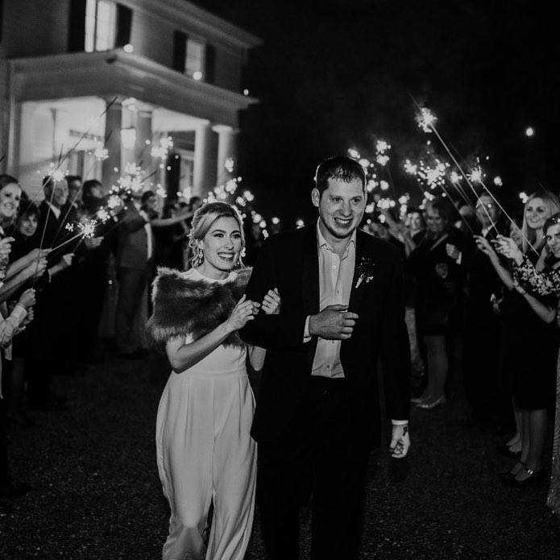

About Me
Hello, my name is Rob Herd. I am 26 years old, native to Atlanta, GA. I am married to my beautiful and patient wife Alex Herd, and have two wonderfully noisy dogs named Goose and Duck. Goose is a Siberian Husky, and Duck is a Mountain Cur/climbing dog. I currently work as a support analyst/developer at PowerPlan, Inc., which develops financial software solutions for asset-intensive industries.
I went to school at Georgia Institute of Technology, where I studied Aerospace Engineering for 5 years before finally breaking free and graduating. I have since gone on to other fields of work and study, including this class, where I hope to finally learn the development skills that I use at my job everyday. Some of my hobbies outside of work/school include playing the piano, fencing, playing tennis, and taking my dogs on roadtrips and adventures. I love cold brew coffee and tacos.